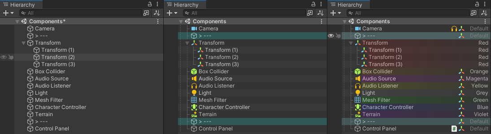

sHierarchy#
Minimalistic good looking hierarchy

🏆 Features#
- Show enable/disable state of each components
- Show log/warning/error icon
- Clean, no files are generated
- Clean, no other resource files
- Lightweight, no other dependencies
- No redundant workflow
- Work in Prefab Mode
License#
Copyright (c) Pixisoft. All rights reserved.
pixisoft.tw@gmail.com